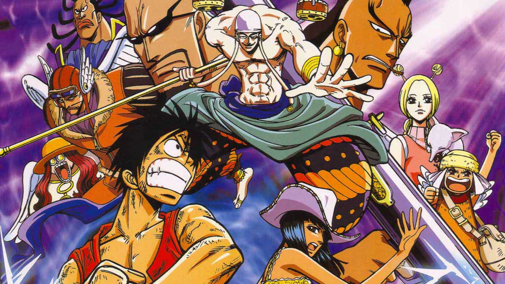
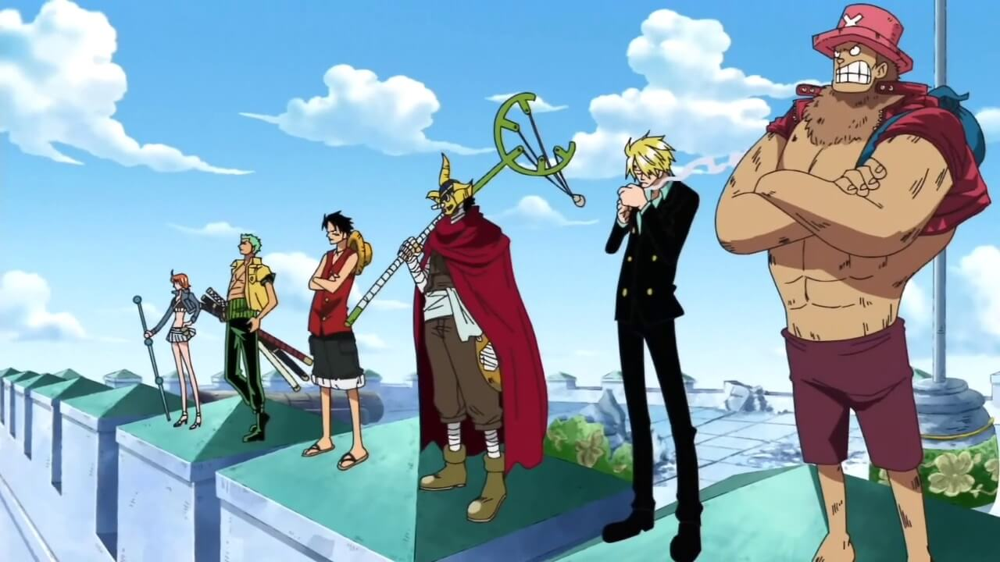
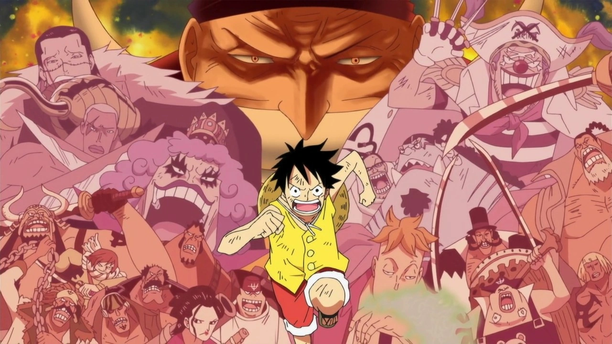
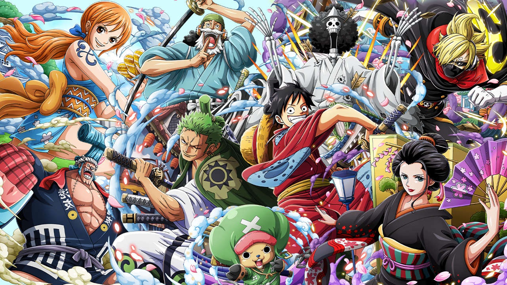
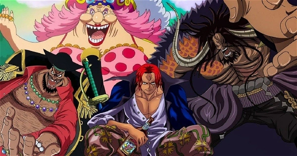

Sagas de One piece
One Piece é um anime que conta a história de Luffy, um pirata que está atrás de um conhecido tesouro, com o
mesmo nome do anime, em busca de se tornar o próximo Rei dos Piratas.
Conheça todos as as sagas e seus arcos, até o mais atual, neste guia especial de One Piece.
Saga East Blue
Começamos pela saga que apresentou Luffy ao mundo, a chamada Saga East Blue. Ela mostra o personagem ainda criança vivendo em East Blue e no início do recrutamento de tripulantes para ele caçar o One Piece e tentar se tornar o Rei dos Piratas.
Arcos da Saga
- Arco Romance Dawn (ou Arco do Capitão Morgan): episódios 1 ao 4;
- Arco Orange Town (ou Arco do Buggy, o palhaço): episódios 5 ao 8;
- Arco Vila Syrup: episódios 9 ao 18;
- Arco Baratie: episódios 19 ao 30;
- Arco Arlong Park: episódios 31 ao 44;
- Arco Bando do Buggy: Após a Batalha!: episódios 46 e 47;
- Arco Loguetown: episódios 45 e 48 ao 53;
- Arco Dragão Milenar: episódios 54 ao 61 (arco filler)
Saga Alabasta

Na segunda saga, intitulada Alabasta (ou Baroque Works) Luffy e sua tripulação segue na busca pelo One Piece, na tentativa do rapaz se tornar o Rei dos Piratas. Entretanto, eles precisam ajudar a Nefertari Vivi a chegar na sua pátria antes que uma guerra se inicie. O problema é que uma organização mal intencionada vai fazer de tudo para impedir Luffy e seus amigos de chegar em Alabasta.
Arcos da saga
- Arco Reverse Mountain: episódios 62 e 63;
- Arco Whiskey Peak: episódios 64 ao 67;
- Arco Coby e Helmeppo: episódios 68 e 69;
- Arco Little Garden: episódios 70 ao 77;
- Arco Ilha Drum: episódios 78 ao 91;
- Arco Alabasta: episódios 92 ao 130;
- Arco Pós-Alabasta: episódios 131 ao 135 (arco filler);
Saga Skypiea
Na terceira saga de One Piece, intitulada Skypieia, os Chapéus de Palha seguem em sua aventura. Porém, Luffy e os outros se deparam com uma terra cheia de mistérios e envolvida em uma guerra que pode destruir de uma vez Skypiera. Esse é um dos arcos que já começam com fillers logo no início da saga.
Arcos da Saga
- Arco Ilha dos Carneiros: episódios 136 ao 138 (arco filler);
- Arco Névoa Arco-Íris: episódios 139 ao 143 (arco filler);
- Arco Jaya: episódios 144 ao 152;
- Arco Skypiea: episódios 153 ao 195;
- Arco G-8: episódios 196 ao 206 (arco filler)
Saga Water 7
Water 7 é a quarta saga de One Piece, conhecia também por Saga Enies Lobby ou Saga CP9. Desta vez, os piratas já estão em mar aberto novamente e irão enfrentar alguns perigos em sua empreitada na busca do One Piece. Um deles é o trapaceiro Foxy, além de um dos três Mirantes da Marinha, chamado Aokiji. Luffy precisa chegar a Water 7 para encontrar um carpinteiro que se junte a sua tripulação e conserte seu navio.
Arcos da Saga
- Arco Davy Back Fight (ou Arco Long Ring Long Land): episódios 207 ao 219;
- Arco Sonho do Oceano: episódios 220 ao 224 (arco filler);
- Arco Retorno de Foxy: episódios 225 e 226 (arco semi-filler);
- Arco Water 7: episódios 227 ao 265;
- Arco Enies Lobby: episódios 266 ao 312;
- Arco Pós-Enies Lobby: episódios 313 ao 325;
Saga Thriller Bark
Na quinta saga do anime, Luffy e os tripulantes acabam desembarcando em uma ilha fantasma chamada Thriller Bark. No local, um estranho personagem usa a sombra de Luffy para reviver Oars, um lendário gigante. Com a ajuda de Brook, um esqueleto, Luffy e os outros Chapéus de Palha terão que enfrentar Oars e aquele que lhe trouxe de volta a vida.
Arcos da Saga
- Arco Adorável Terra: episódios 326 ao 336 (arco filler);
- Arco Thriller Bark: episódios 337 ao 381;
- Arco Ilha Spa: episódios 382 ao 384 (arco filler);
Saga Guerra de Marineford
Conhecida também como Saga Cúpula da Guerra, a Guerra de Marineford marca o final da primeira metade do anime. Neste ponto da trama, Luffy e os outros Piratas do Chapéu de Palha são separados no Arquipélago de Sabaody. E é aqui que as coisas parecem se tornar um pouco mais difíceis para Luffy e os outros.
Arcos da Saga
- Arco Arquipélago Sabaody: episódios 385 ao 407;
- Arco Amazon Lily: episódios 408 ao 421;
- Arco Impel Down: episódios 422 ao 425;
- Arco Pequeno-oriente Azul: episódios 426 ao 429; (arco filler)
- Arco Impel Down: episódios 430 ao 456 (continuação pós-filler);
- Arco Marineford: episódios 457 ao 489;
- Arco Pós-Marineford: episódios 490 ao 516;
Saga Ilha dos Homens-Peixe
Conhecida também como Saga Ilha dos Homens-Peixe, ela apresenta a trama depois de 2 anos do timeskip (avanço de tempo). Os Chapéus de Palha se reencontram no Arquipélago Sabaody e rumam para o Novo Mundo, mas para isso eles precisam passar pela Ilha dos Tritões e enfrentar alguns piratas que estão por ali.
Arcos da Saga
- Arco Retorno a Sabaody: episódios 517 ao 522;
- Arco Ilha dos Tritões: episódios 523 ao 574;
Saga Aliança Pirata
Finalmente Luffy e sua tripulação conseguem chegar ao Novo Mundo, porém eles acabam se deparando com um antigo laboratório do Dr. Vegapunk e encontram experimentos ilegais de Caesar Clown. Luffy acaba formando alianças e descobre uma conspiração existente na ilha de Dressrosa.
Arcos da Saga
- Arco Ambição de Z: episódios 575 ao 578 (arco filler)
- Arco Punk Hazard: episódios 579 ao 625;
- Arco Recuperando César: episódios 626 ao 628 (arco filler);
- Arco Dressrosa: episódios 629 ao 746;
- Arco Minas de Prata: episódios 747 ao 750 (arco filler);
Saga Yonkou
Chegamos a saga mais atual de One Piece, intitulado Yonkou. Uma aliança chamada Ninja-Pirata-Mink-Samurai é formada para derrubar Kaido. É quando Luffy entra em ação, se envolve com um Yonko chamado Big Mom e precisa embarcar numa missão de resgate de seu amigo, Sanji.
Arcos da Saga
- Arco Zou: episódios 751 ao 779;
- Arco Marinha Supernova: episódios 780 ao 782 (arco filler);
- Arco Whole Cake: episódios 783 ao 877;
- Arco Reverie: episódios 878 ao 889;
- Arco País de Wano: episódios 890 ao 894
- Arco Rei do Ácido Carbônico: episódios 895 e 896
- Arco País de Wano (continuação): episódios 897 ao 906
- Arco/Episódio Madrugada de Romance: episódio 907 (episódio filler)
- Arco País de Wano (continuação): episódios 908 ao 1028
- Arco O Passado de Uta: episódio 1029 ao 1030 + SP-4 (arco filler)
- Arco País de Wano (continuação): episódio 1031 ao 1079 + SP-5 + SP-6 + SP-7 + SP-8 + SP-9 + SP-10 (atualmente)
SP: Episódios especiais de recapitulação
Voltar para a Página Inicial